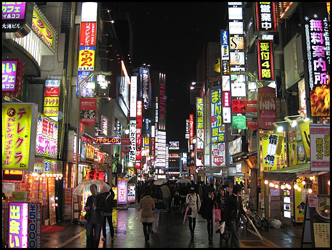

Tokyo
Tokyo consists of the southwestern part of the Kanto region, the Izu Islands, and the Ogasawara Islands. Tokyo is the capital of Japan, and the place where over 13 million people live, making it one of the most populous cities in the world. When the Shogun Tokugawa Ieyasu established a government there in the early 17th century, the area started to develop, spreading out around his residence, Edo Castle. Most of the city was devastated by the Great Kanto Earthquake of 1923, and then again by the bombing in the WWII, however, Tokyo was able to achieve a remarkably rapid recovery both times.
Tokyo is not only the political and economical center of Japan, it has also emerged as a center of the world economy and culture. There are a number of attractions in Tokyo that should not be missed. There are large-scale downtown areas, including Ginza where famous shops from around the world stand side by side, the sleepless Shinjuku that has become the "new city center of Tokyo," Asakusa which is reminiscent of the traditional Edo (the former name of Tokyo), and Shibuya that starts the trends for the young people. Other unique areas include the computer town Akihabara, a dense retail area where numerous electronic shops compete against each other, attracting many shoppers from Japan and overseas, and Tsukiji, an open-air wholesale food market catering to shops and consumers everywhere in Japan.

Home